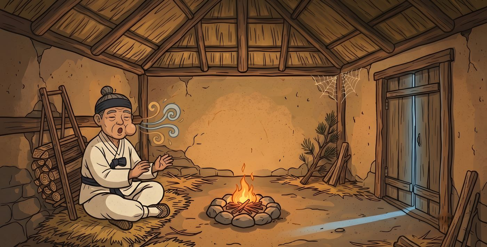
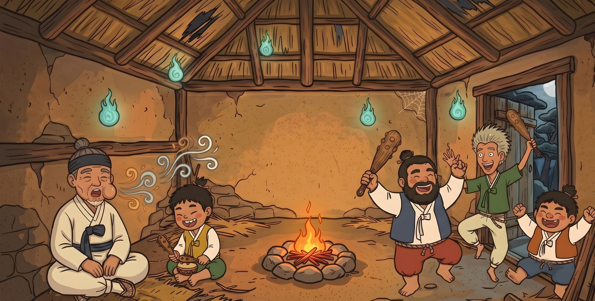

Korean Folktales for Little Readers · Book 6
The Goblins and the Singing Grandpa
A Korean Folktale · Retold by Bright Lee
A grandpa who loves to sing. Four goblins who love to dance. And one very clever answer.
A kind old grandpa with a big round lump on his cheek is still on the mountain when night falls. Alone in an empty hut, he sings to feel brave. Thump, thump, thump! In burst four dokkaebi, Korean goblins with wild, shaggy hair and magic clubs. "Who is singing? Who is singing?"
When the goblins ask where his wonderful voice comes from, Grandpa thinks fast: "From this lump, of course!" Pop! Off comes the lump, and out comes gold and silver. Ttukttak! But when his greedy neighbor tries the very same trick, the goblins have a funny surprise waiting for him.
Korean dokkaebi are not scary monsters. They are noisy, silly, and love music, and in the oldest Korean stories they have no horns at all. This book draws them that way, with bold, playful pictures in the style of minhwa, Korean folk painting.
A note for parents: Nobody gets hurt. The lump comes off with a "pop" and "did not hurt at all," and the greedy grandpa simply runs home with two wobbly lumps while the goblins laugh.
- Ages
- 4–8
- Format
- Paperback, 8.5 × 8.5 in, full color, 32 pages · Kindle edition
- ISBN-13
- 979-8163396214 (paperback)
- Published
- October 20, 2026
- Publisher
- Glowwin Books
From the Journal: Are Korean goblins scary? Meet the dokkaebi
Look inside



At the back of the book
More than a story
- About This Story
Who the dokkaebi really are, dokkaebi fire, and why Koreans still say "ttukttak!". - Korean Words
First Korean words with easy pronunciation. - Tricky Words to Say
Help for grown-ups reading aloud, including parents still learning English. - Talk About It
Questions to share after reading, plus a space to draw your own dokkaebi.
Korean words in this book
| Korean | Spelled | Say it | Meaning |
|---|---|---|---|
| 도깨비 | dokkaebi | DOH-keh-bee | a Korean goblin |
| 방망이 | bangmangi | BAHNG-mahng-ee | a club, a bat |
| 뚝딱 | ttukttak | TOOK-tahk | "bang!" (a quick tapping sound) |
| 혹 | hok | HOHK | a lump, a bump |
| 노래 | norae | NOH-reh | a song |
| 할아버지 | harabeoji | HAH-rah-buh-jee | grandpa |